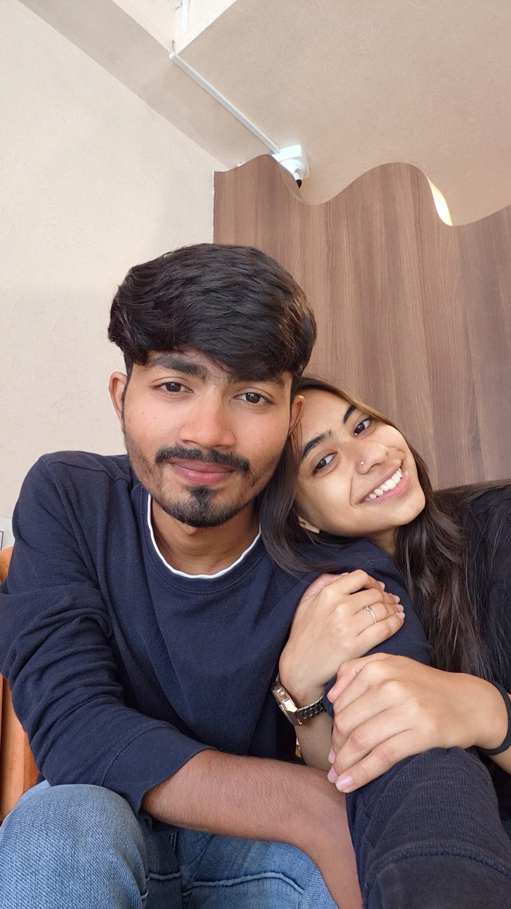
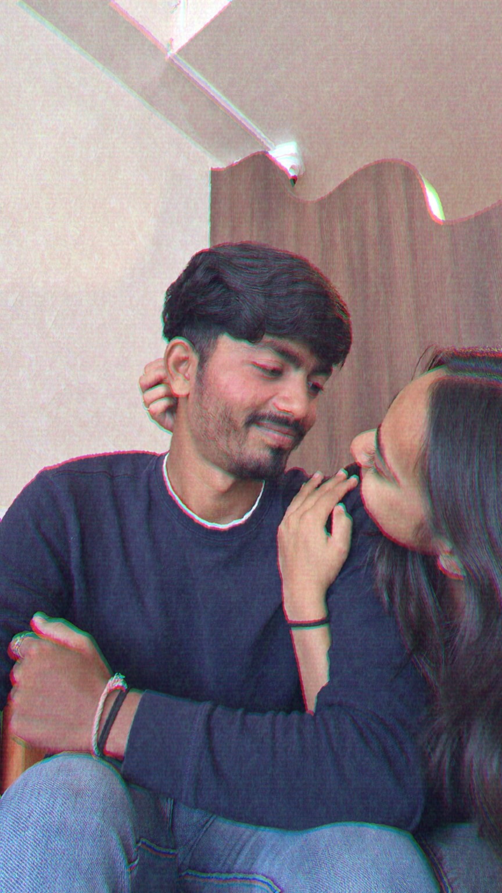
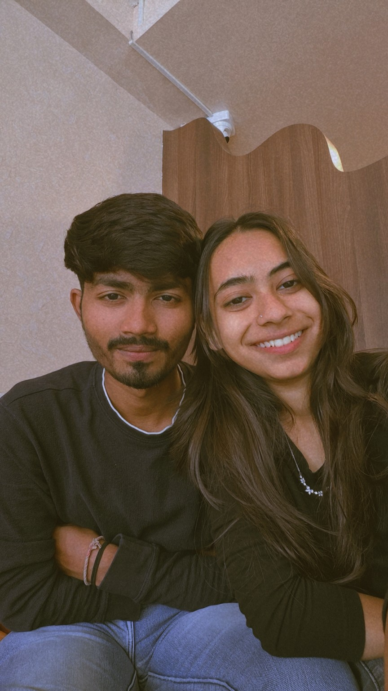

MY FAVORITE PLACE
01Somewhere between your smile and my smile, the whole world gets quieter.
For my favorite person, my sweetest plot twist, and the girl who makes ordinary days feel like something worth remembering.
Take a little walk with me ↓One day, these will be the little things we look back on and smile about. The looks, the laughs, the quiet closeness. I don't need every day to be extraordinary. I just want a few more of them with you.

Somewhere between your smile and my smile, the whole world gets quieter.

If looks could keep someone safe, I'd live in yours forever.

Pretty is an understatement. You have the kind of smile that makes a bad day lose its argument.
In a room full of people,
my heart would still look for you first.
Photos hold a second. Videos let me visit it again. Here are a few pieces of us I'd happily replay a thousand times.
I'd press it right here, right now, and probably never get tired of it.
One look at you and suddenly I forget what I was trying to say. Rude, honestly. ♡
For the days when I miss you a little extra, this is where I'd come.
I don't always know how to fit everything I feel into words, but I'll keep trying—because you deserve to be reminded.
You make the small things feel special. You make a simple moment feel like a memory before it's even over. And somehow, even when you're right beside me, a part of me is already wishing I could freeze the moment for a little longer.
I love your smile, your little expressions, the way you can make me soft without even trying. I love that being with you doesn't have to be a big plan. Sometimes it's just us, sitting close, doing nothing important—and somehow that's my favorite thing.
I'm not promising that every day will be perfect. I'm promising that I'll keep choosing honesty, effort, laughter, patience, and you. I'll keep finding new reasons to fall for you, even on the days when we've heard every story and stolen every blanket.
So if you ever wonder what you mean to me, come back to this little page. Every photo says it in its own way: I'm really, really glad it's you.
How are you this cute and still expecting me to act normal?
IF YOU REMEMBER ONE THING
Out of all the people, places, and possibilities in this world… I'm glad my story found you.